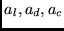
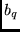

Next: Input data
Up: HFS
Previous: Introduction
Contents
The program structure is shown on Figure 7.37.
The configurations are analyzed for orthogonality (cfgn(), cfg01()).
factr() computes a table of logarithms of factorials.
readwt() reads the weight from .l or .j file. A number of
and dependent factors are determined
in lsjfact(). The wave functions are read in readwfn().
The one-electron active radial integrals are determined in radial1()
and radial2(). multwt() multiplies the weights of configuration
 and . setup() transforms the occupation and coupling
for a configuration pair in a format suitable for use by tensor(),
which evaluates the reduced matrix element between arbitrarily LS
coupled configurations.
Figure 7.37:
hfs program structure.
 |
2001-10-11